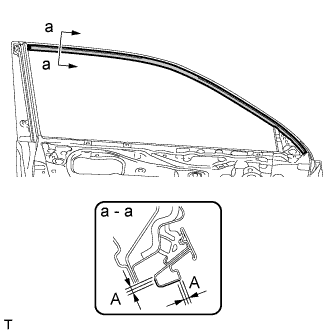
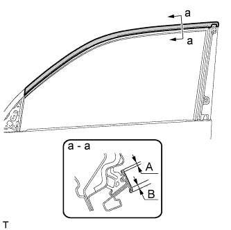

BLACK OUT TAPE (for Front Door) > INSTALLATION |
| 1. REPAIR INSTRUCTION |
Clean the vehicle body surface.
Using a heat light, heat the vehicle body surface.
Wipe off any tape adhesive residue with cleaner.
Installation temperature.
When the ambient temperature is below 15°C (59°F), perform the installation procedure after warming the vehicle body surface (installation surface of the door frame) and tape to between 20 and 30°C (68 and 86°F) using a heat light. When the ambient temperature is higher than 35°C (95°F), cool the vehicle body surface (installation surface of the door frame) and tape to between 20 and 30°C (68 and 86°F) prior to installation.
Before installation.
Make sure any dirt on and around the vehicle body surface where the tape will be installed (installation surface of the door frame) is removed, and that the surface is smooth. If the surface is rough or dirt remains when pressing the tape onto the surface, air will be trapped under the tape and result in a poor appearance.
Key points for handling the tape.
The tape bends and rolls up easily. Store the tape between flat pieces of cardboard or other similar objects and keep it dry and level.
Key points for the installation of the tape (how to use a squeegee and the installation procedure for a flat surface).
To avoid air bubbles, slightly raise the part of the tape that is going to be applied so that its adhesive surface does not touch the vehicle body while applying the tape. Tilt the squeegee 40 to 50° (for pressing forward) or 30 to 45° (for pulling) from the vehicle body surface and press with a force of 20 to 30 N (2 to 3 kgf) while moving the squeegee at a constant slow speed of 3 to 7 cm (1.2 to 2.8 in.) per second.
| *A | Pressing | *B | Pulling |
| *1 | Squeegee | *2 | Black Out Tape |
| *3 | Release Paper | - | - |
| *a | Sectional View | *b | Non-padded Side |
| *c | Padded Side | - | - |
Key points for the installation of the tape (how to use a squeegee and the installation procedure for hemming surfaces).
If it is difficult to press the tape, press it in several steps as shown in the illustration. Use your fingers or the padded surface of a squeegee to slowly apply the tape to the hem of the vehicle, especially for a small hem.
| *1 | Squeegee |
| *a | First |
| *b | Second |
| *c | Third |
Key points for the installation of the tape (how to use a squeegee and the installation procedure for corners).
Remove the release paper and apply the tape carefully with your fingers.
Before applying the tape to each corner, heat the tape using a heat light and gradually apply it to avoid wrinkles in the tape and achieve a neat finish.
Check after installation.
After completing the application, check if the tape is applied neatly. If the tape is not applied neatly, apply new tape.
| 2. INSTALL LOWER FRONT DOOR OUTSIDE STRIPE LH |
 |
| Item | Temperature |
| Vehicle Body | 40 to 60°C (104 to 140°F) |
| Outside Stripe | 20 to 30°C (68 to 86°F) |
Refer to the illustration to position a new lower front door outside stripe.
| Area | Specified Condition |
| A | +/-1.0 mm (0.039 in.) from end |
| 3. INSTALL FRONT DOOR OUTSIDE STRIPE LH |
|  |
| Item | Temperature |
| Vehicle Body | 40 to 60°C (104 to 140°F) |
| Outside Stripe | 20 to 30°C (68 to 86°F) |
Refer to the illustration to position a new front door outside stripe.
| Area | Specified Condition |
| A | +/-1.0 mm (0.039 in.) from end |
| 4. INSTALL NO. 1 BLACK OUT TAPE LH |
|  |
| Item | Temperature |
| Vehicle Body | 40 to 60°C (104 to 140°F) |
| Black Out Tape | 20 to 30°C (68 to 86°F) |
Refer to the illustration to position new black out tape.
| Area | Specified Condition |
| A | 2.0 to 4.0 mm (0.078 to 0.158 in.) |
| B | 4.0 to 6.0 mm (0.157 to 0.236 in.) |
| 5. INSTALL FRONT DOOR REAR WINDOW FRAME MOULDING LH |
Install the front door rear window frame moulding (Click here).
| 6. CONNECT CABLE TO NEGATIVE BATTERY TERMINAL |
| 7. INITIALIZE POWER WINDOW CONTROL SYSTEM |
Initialize the power window control system (Click here).
| 8. ADJUST SIDE TELEVISION CAMERA ASSEMBLY |
w/ Rear View Monitor System:
Adjust the side television camera (Click here).
Parking Assist Monitor System:
Adjust the side television camera (Click here).